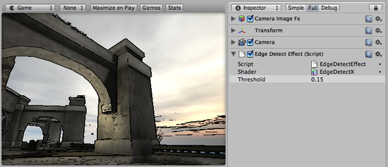

Edge Detection image effect
Edge Detect image effect adds black edges to the image where color differences exceed some threshold.
Like all image effects, Edge Detection is available in Unity Pro only. Make sure to have the Pro Standard Assets installed.

Edge Detect image effect applied to the scene
Edge Detect image effect applied to the scene
| Threshold | Edges will be displayed whenever color difference in neighboring pixels exceeds this amount. Increase this value to make edges less sensitive to texture or lighting changes. |
Hardware support
Edge Detect works on graphics cards with support for pixel shaders (2.0). E.g. GeForce FX 5200 or Radeon 9500 and up. All image effects automatically disable themselves when they can not run on an end-users graphics card.